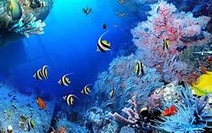

Biodata Pribadi
- Nama : Irawati Devi
- Tempat, Tanggal Lahir : Tangerang, 06 Juli 2200
- Agama : Islam
- Jenis Kelamin : Perempuan
- Alamat : Kp. Ranca Serdang RT011/003 Ds. Ranca Iyuh Kec. Panongan Kab. tangerang
- Email : irawatidevi@upi.edu
- No.HP : 0895331817826
Riwayat Pendidikan
- Sekolah Dasar : SDN Ranca Iyuh III (2007-2013)
- Sekolah Menengah Pertama : SMPN 1 Panongan (2013-2016)
- Sekolah Menengah Atas : SMAN 15 Kabupaten Tangerang (2016-2019)
- Perguruan Tinggi : Universitas Pendidikan Indonesia (2020-Sekarang)
- Program Studi : Sistem Informasi Kelautan
Catatan
Saya sangat suka dan senang ketika melihat kehidupan dibawah Laut yang indah.
Silahkan klik gambar dibawah ini untuk melihat laut yang indah :)
